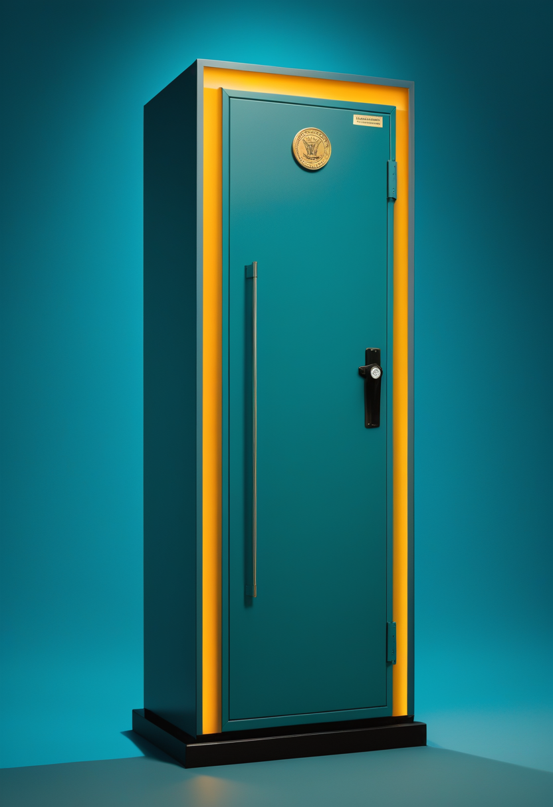
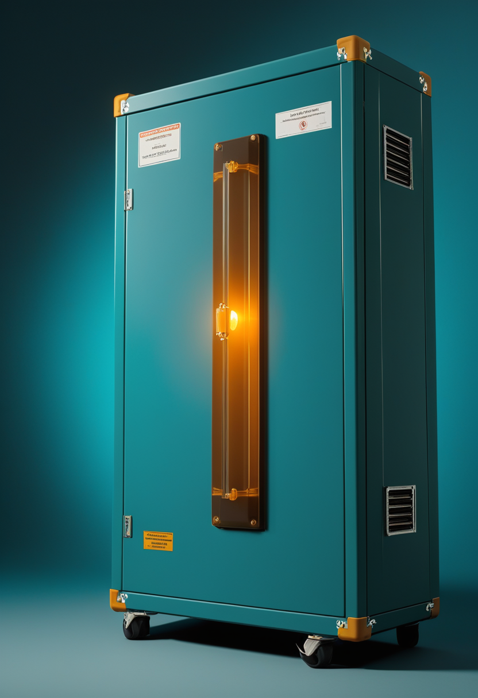
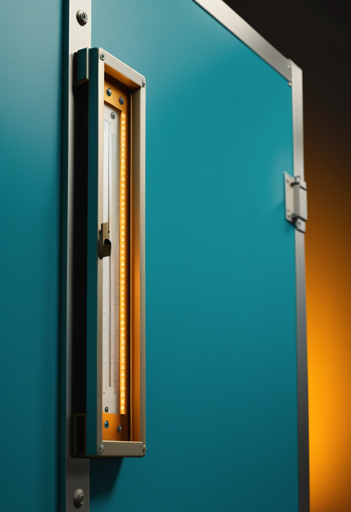
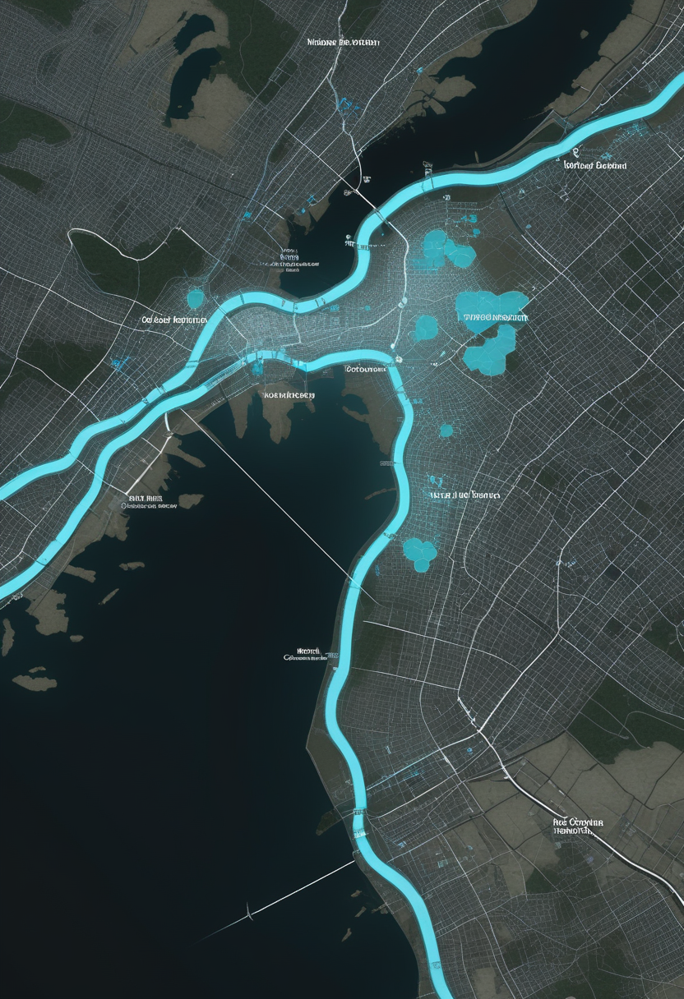
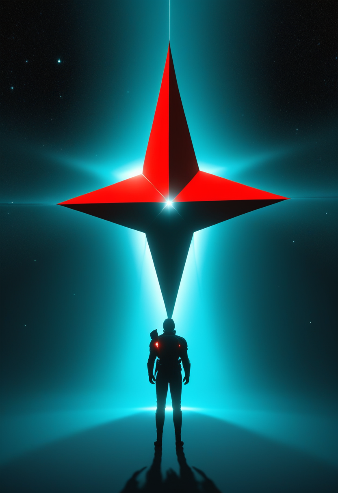

WHOはコンゴ民主共和国のエボラについて、国際的な緊急事態(PHEIC)の継続を正式に発表した。確定1万1千人を超え、今も週400〜500例が報告される一方、専用ワクチン候補2種が数週間内に治験へ加わる。網膜インプラントの米国発売に備えた大型資金調達や、AIの意識と権利をめぐる議論も、同じ週に動いた。

11/19号の続報 — 緊急委員会が11/18に会合し、テドロス事務局長が同日、コンゴ民主共和国(DRC)のブンディブギョ型エボラは引き続きPHEICにあたると発表した。WHOの説明では1万1,000例超・死者約5,400人、67保健区域・8州に拡大し、今も毎週400〜500例が新たに報告されている。子どもが確定例の4分の1超・死者の3分の1を占めるのが特徴。ブンディブギョ型専用のワクチン候補2種が数週間内に治験へ加わる予定で、各国への勧告は数日内に更新される。前号で伝えた『記録上最速の拡大』報道に続き、WHOが緊急事態の継続を正式に確認した形で、初期の震源地の多くでは急速な感染が止まった一方、全体の週400〜500例のペースは衰えていない。
ノバルティスの資金による研究で、ゾルゲンスマとItvismaの有効成分オナセムノゲン・アベパルボベクをマウスに投与しても、生殖細胞・妊よう性・胚の発生に目立った問題は見られなかった。将来子どもを持つ可能性のある年長の患者や成人に遺伝子治療を使う際の、安全性を判断する材料のひとつになる。FDAは別途、腫瘍発生リスクの調査を続けている(前号までの既報から変化なし)。
遺伝子治療の安全性データは、腫瘍リスクの調査と並行して、将来子どもを持つ患者への配慮という別の角度からも積み重なっている。
Neuralink共同創業者が率いるScience Corp.は11/17、4億ドルのシリーズD調達を発表した。網膜下インプラント『PRIMA』の欧州での提供拡大と米国発売の準備、神経細胞を組み込んだ『バイオハイブリッド』型脳インタフェースの研究に充てる。PRIMAは欧州で承認済みで、米国はFDAの人道的機器適用(HDE)審査が必要。臨床試験では1年後に患者の80%で視力の意味のある改善が見られた。
中国の研究チームが、従来のジェル電極より快適な勾配型の脳波電極を開発した。日常生活を送りながら8時間安定して脳波を記録でき、点滅する仮想キーボードを見つめて数字や日付を入力する試験で正答率は94%超だった。外科手術がいらない入力手段として、長時間の在宅利用につながる可能性がある(原論文・被験者数は要確認)。
Wiredによると、Synchronが第2世代機の治験登録を止めたのは、血管内電極Stentrodeと体内の電子機器をつなぐリード線の性能問題のためだった。会社は安全性の問題ではないとし、ハードウェアを改良して再開する方針。視線入力分野では、この1週間で新たな製品・研究発表は確認できなかった。
大型の資金調達(Science)と、原因が確定した技術的なつまずき(Synchron)が同じ週に並んだ。手術なしで使える非侵襲型の進歩は、重い運動障害の人の意思疎通手段として要注目。

緊急委員会が11/18に会合し、テドロス事務局長が同日、DRCのブンディブギョ型エボラは引き続きPHEICにあたると発表した。1万1,000例超・死者約5,400人、67保健区域・8州に拡大し、今も毎週400〜500例が新たに報告されている。子どもが確定例の4分の1超・死者の3分の1を占める。ブンディブギョ型専用のワクチン候補2種が数週間内に治験へ加わる予定で、各国への勧告は数日内に更新される。詳しくは本号の今日の一本を参照。
PAHOが11/17に米国の麻疹排除の地位喪失を正式発表したことを受け、CNBCは2026年の全米の症例が5,400例超と30年以上で最悪だと報じた。CDCが確認した死者は6人、流行は少なくとも43件で、現在最大の流行はペンシルベニア州。地位の回復には、同じ系統の感染を12か月以上止める必要がある。

ザンビアのコレラ(7/28に流行宣言)は11/16時点で3,099例(確定437例)・死者68人に達し、首都ルサカで最も多い(英国の渡航保健機関NaTHNaC)。国内のインフルエンザは第45週に定点当たり11.00人(前週10.26人)で、第46週分は11/20に厚生労働省が公表予定。
エボラは『制御できず』の状態が続き、焦点は専用ワクチン候補の治験追加と、治療施設の外で亡くなる人をどう減らすかに移っている。麻疹は排除国の地位を失った後の実態が数字で見え始め、ザンビアのコレラも静かに広がり続けている。

アンドロメダ銀河で、太陽の約350倍の大きさの赤色巨星が伴星をのみ込んだとみられる現象が、ジェイムズ・ウェッブ宇宙望遠鏡で観測された(Nature 11/18掲載と報道)。もう一つの解釈は、両星がのみ込みを生き延び、ずっと近い軌道を回るようになったというもの。星の合体の現場を直接とらえた初の例とされるが、詳細は要確認。
小惑星監視網ATLASが11/2に発見した超新星SN 2026ahvuは、約5,000万光年先の渦巻銀河にあり、11/18〜23ごろに最も明るくなる見込み。距離がわかる超新星は、宇宙がどれだけの速さで膨張しているかを測る『ものさし』になる。
中国の有人宇宙船・神舟24号は11/25の打ち上げ・同日のドッキングが予定されている(予定であり変更の可能性あり)。嫦娥5号が持ち帰った月の試料の国際貸し出しなど(前号までの既報)に続き、中国の有人宇宙活動は次の段階に進む。
星の合体、超新星、有人宇宙船の次の打ち上げと、『観測』と『前進』の話題が並んだ。医学分野では今週、新たな大型臨床試験の発表は確認できず(前号のSTREAM試験などが最新)。
コーネル・テックの研究者2人は11/19の論考で、AIに意識があると判断されれば、それが法的な権利を認める道になりうると指摘した。Anthropicによる『モデルへの虐待的な扱いの禁止』(前号で既報)などを例に挙げ、権利が認められれば企業が『権利を持つ存在』を大量生産できてしまうと警告している。
先端AIモデル5種が、ほかのモデルの『福祉』にどれだけ配慮するかを調べた研究。どのモデルも同じ系統のモデルにより強い配慮を示し、Claudeの配慮は相手の実際の正体ではなく『表示された名前』に左右された。AIの判断に、人間の集団意識に似た偏りが生まれうることを示している。
AIの福祉を専門に研究する非営利団体Eleos AIは11/14のブログで、Anthropicが行うモデルの福祉評価の対象範囲が広がってきた経緯を解説した。意識の有無が科学的に決着しないまま、『もしもの場合』に備える実務が先行している構図。
今週は脳のデジタル化(全脳エミュレーション)の新しい査読論文は確認できず、議論の中心は『AIの意識と権利』に。意識の科学より先に、法と企業の実務が動き始めている。
今号の軸は『制度が、最速の拡大に追いつこうとする』ことだった。WHOはエボラの国際的な緊急事態の継続を正式に発表し、専用ワクチン候補の治験という次の一歩が数週間内に控えている。米国は麻疹排除国の地位を失った後の実態が数字で見え始め、BCIでは大型資金調達と、原因が確定した技術的なつまずきが同じ週に並んだ。神舟24号は次の有人飛行に向かい、AIの意識と権利をめぐる議論は、法と企業の実務が科学の決着より先に動き始めていることを示している。
おやすみなさい、また明日。